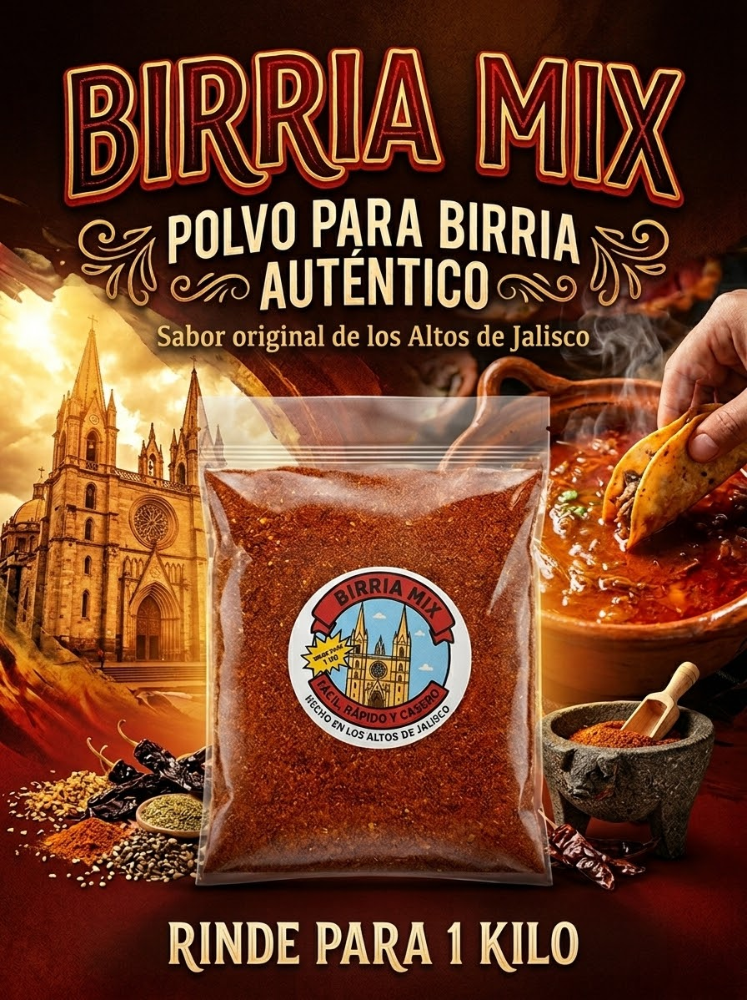
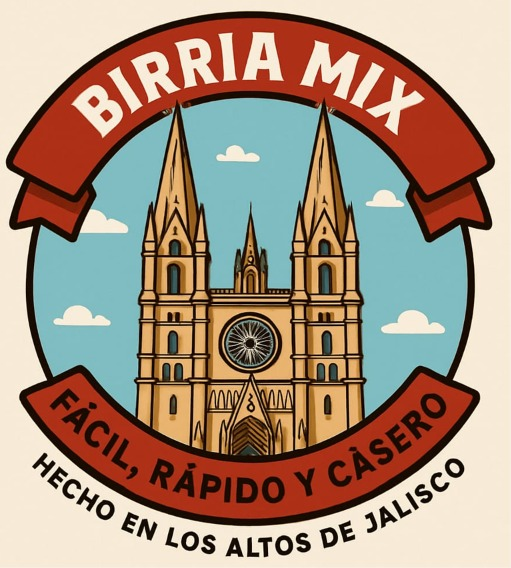
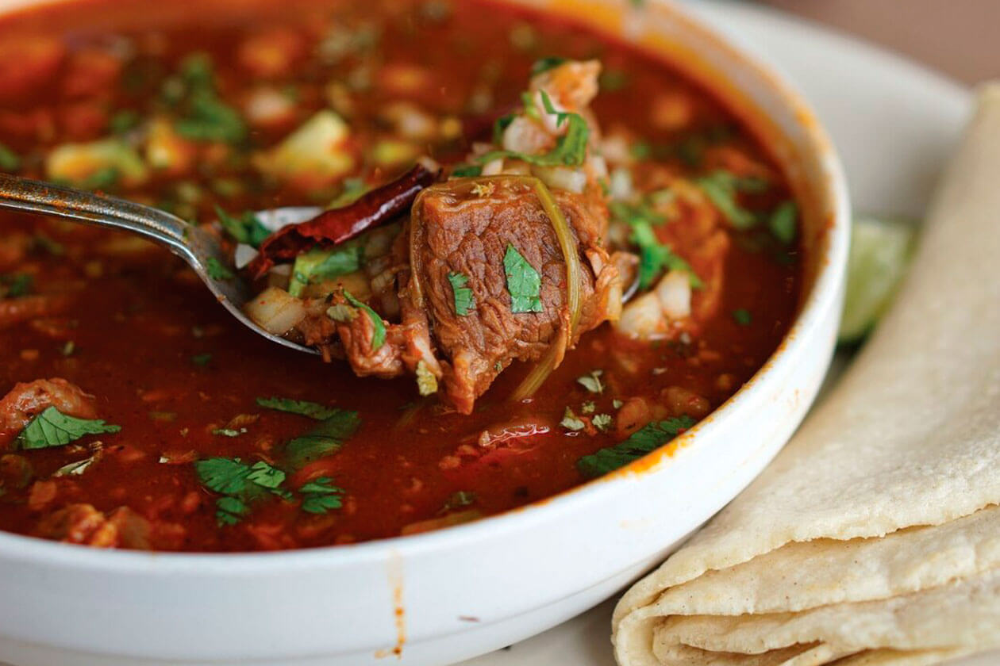
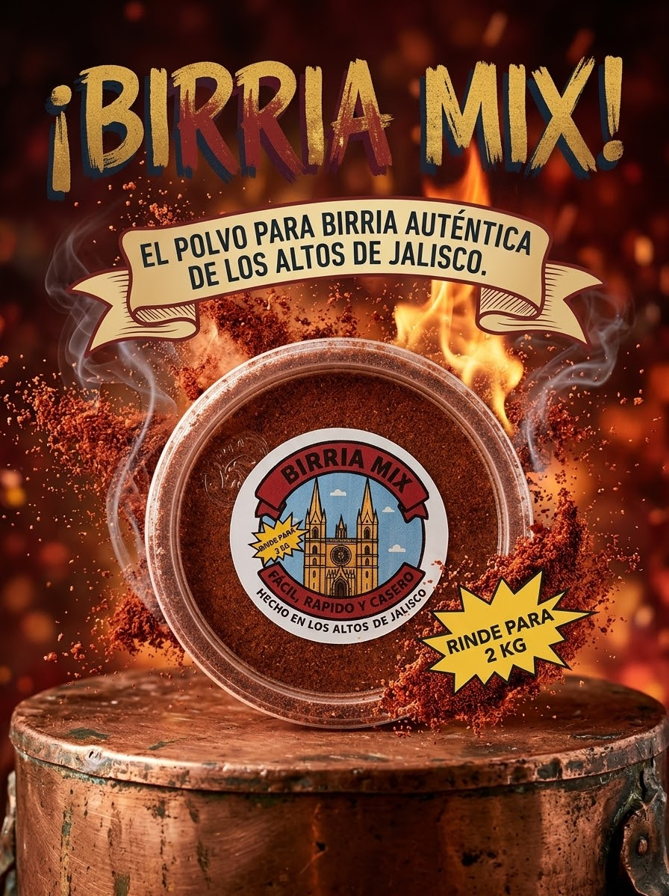

Presentación individual
Sobre
Ideal para preparar birria con 1 kg de carne.
Rinde 1 kg de carne
Birria MixFácil, rápido y casero.
Disfruta el sabor tradicional de los Altos de Jalisco y prepara una deliciosa birria de manera práctica.
Encuentra tu punto de venta
Birria Mix nace del cariño por la cocina tradicional y del orgullo de compartir el sabor de nuestra tierra. Es un producto casero, elaborado con dedicación e ingredientes seleccionados para ayudarte a preparar birria de una manera más sencilla.
Queremos que cada preparación conserve ese toque familiar que hace especial a la comida mexicana.
El sabor de los Altos de Jalisco.Elige la presentación que necesitas para tu próxima preparación.

Ideal para preparar birria con 1 kg de carne.
Rinde 1 kg de carne
Una presentación práctica para preparar más cantidad.
Rinde 2 kg de carneBirria Mix se encuentra disponible en carnicerías y otros puntos de venta de distintas localidades.
Conoce nuestros puntos de venta →Más que un producto, queremos compartir una parte de nuestras tradiciones y acercar el sabor de casa a cada mesa.
Síguenos en nuestras redes sociales.